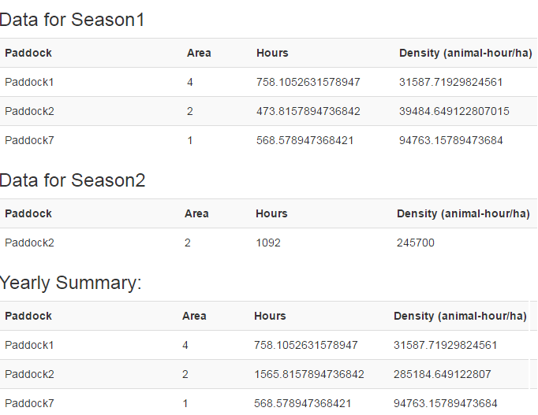

The Whole Farm Dairy Nutrient Calculator module of FarmBuild's JavaScript library is available through the GITHUB repository.
A Whole Farm Nutrient Balance Calculator for Australian dairy farms has been developed in partnership with Murray Goulburn, the Gardiner Foundation and DEDJTR. This JavaScript library is a developer version of the calculator that can be used to model nutrient flow in and out of a dairy farms. Since Australian dairy farms generally import larger quantities of nutrients than they export, knowing the nutrient balance of a farm gives farmers the potential to save money.
What is a Nutrient Balance Calculator?
The Nutrient Balance Calculator determines how efficiently a nutrient is being used on-farm. The amount of a nutrient leaving in farm products (milk or animals) is subtracted from nutrient inputs to calculate the nutrient balance (kilogram of nutrient per hectare of land).
The Whole Farm Nutrient Balance Calculator works with yearly totals. The following is the list of nutrient (N, P, K, S, Ca and Mg) calculator functions provided in this package:
- Nutrient inputs and outputs for animals purchased and sold for the year (heavy cattle, average cattle, yearlings, weaned young stock, and bobby calves).
- Nutrient value of forages purchased (hay and silage) (amount purchased (Tonne/year) by type).
- Nutrient value of concentrates purchased (amount purchased (Tonne/year) by type).
- Nutrient value of fertilisers purchased (amount purchased (Tonne/year) by type).
- Nutrient value of milk sold, total milk for year (Litres), total fat/protein (kilograms), fat (kg/%), and protein (kg/%).
- Nitrogen fixation by legumes based on whole farm average legume percentage (%) the percentage of pasture legumes growing of the farm.
Whole Farm Nutrient Balance Calculator Sources
The Whole Farm Nutrient Balance Calculator for Australian dairy farms was developed through The ‘Accounting for Nutrients on Australian Dairy Farms’ project (A4N). It developed a nationally agreed nutrient accounting framework for N, P, K, S, Ca and Mg for the Australian dairy industry. FarmBuild acknowledges DEDJTR researchers Dr. Cameron Gourley (Project Leader and Principal Research Scientist) and Ivor Awty (Senior Technical Officer). For further information refer to the journal publication - Gourley CJP et al. (2012) Farm-scale nitrogen, phosphorus, potassium and sulphur balances and use efficiencies on Australian dairy farms. Animal Production Science 52, 929–944.
**NEW**
Nutrient Benchmarking Whisker Charts
Benchmarking Whisker Charts have been added to the Dairy Nutrient Calculator. Benchmarking parameters estimated from 60 sets of farm data have been hard coded into the version available on GitHub.

Example of the benchmarking whisker charts now available as part of the Dairy Nutrient Calculator.
Dairy Animal Density Calculator
The Dairy Animal Density Calculator is now available to support the mapping and monitoring of cows/animals across a farm according to animal-hour, paddock area and number of animals. Provided as a generic open source model, this new function can be integrated with a range of applications including nutrient and grazing models. Now available on GitHub.

Screenshot showing example output using the Animal Density Mapping function now available.
Back to FarmBuild